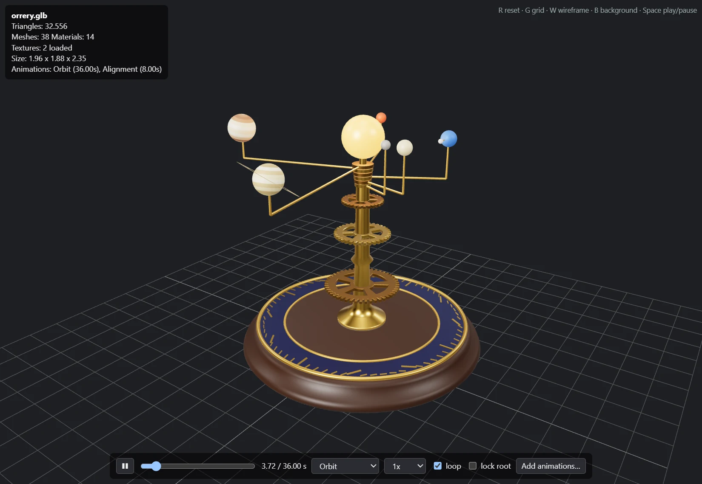
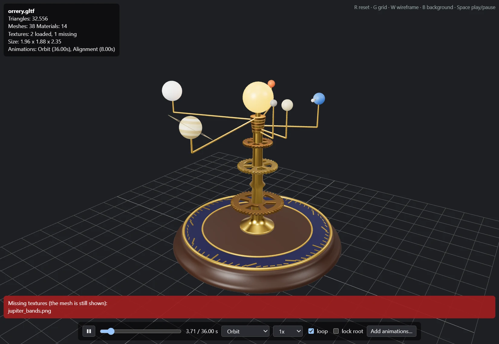
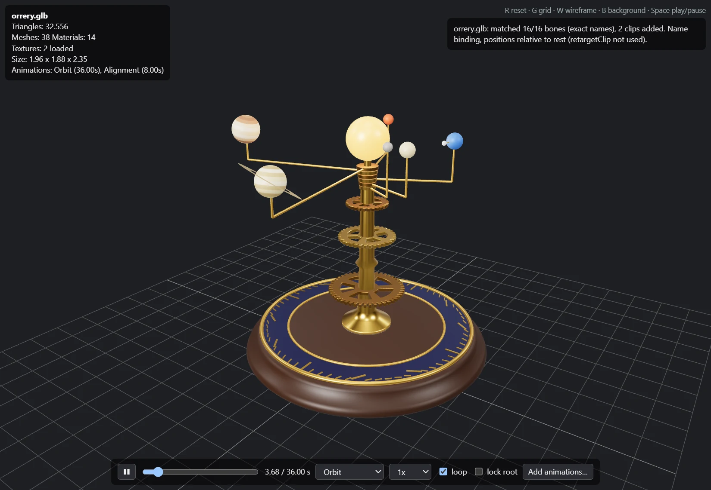

Orrery is a 3D model viewer for FBX, glTF and GLB that gets out of the way: the file opens framed, lit, measured and already playing its first animation. One small exe. No installer, no project, no network.
The live demo needs WebGL, which this browser has turned off. Orrery itself renders with hardware acceleration through WebView2.
R reset · G grid · W wireframe · B background · Space play/pause
0.00 / 0.00 s
Drop to open it here
Live: drag to orbit, scroll to zoom, click and press W for wireframe. The model is built in code for this page and rendered by the same three.js version Orrery ships.or drop a .glb, .gltf or .fbx on the window, with its textures. It never leaves your browser.
Everything you check first, before you ask
Open a file and Orrery does the five things you would do by hand: it frames the whole model, lights it with a studio environment, counts what is inside, finds its textures and starts the first animation.
The overlay in the corner answers the usual questions about an asset you just downloaded or exported: how heavy it is, whether its textures made it, how big it is in its own units, and which clips it carries. When something is wrong, a banner says what, and the mesh is still shown.
Drag another file onto the window to switch. Hold Shift while dropping to add its animations instead.
The overlay, line by line
Triangles
Counted from the real index buffers, every mesh and skinned mesh.
Meshes, Materials
Draw calls at a glance; shared materials are counted once.
Textures
How many loaded and how many are missing, with the missing file names listed.
Size
The bounding box in the file's own units, so a centimetre FBX gives itself away.
Animations
Every clip with its length.
R Reset view
G Grid
W Wireframe
B Dark or light background
Space Play or pause
The real thing
Captures of the actual orrery.exe window, showing the brass orrery from the demo above exported as a GLB. Nothing here is a mock-up.

A GLB with two clips: the overlay, the grid and the control bar with the clip list.

A texture file is missing: the banner names it and the model is still drawn.

Clips added from a second file, with the binding summary in the corner.
Textures, found where the exporter left them
FBX files remember texture paths from the machine that made them: absolute paths on someone else's drive, backslashes, .. hops, a PSD where you have a TGA. Orrery tries the reasonable places in order and stops at the first file that exists.
1
Inside the file
Embedded images in GLB and FBX.
2
Next to the model
Paths relative to the model, including backslashes and ...
3
Where the FBX says
The exact absolute path written in the file, if it is an image.
4
By name, nearby
The same file name, or the same name with another image extension, in the model's folder tree (5 levels) and its parent's (4 levels).
×
Still missing
Listed by name in a banner. The mesh renders anyway.
PNG, JPEG, TGA, BMP, WebP, GIF and KTX2 images are read. PSD cannot be decoded, so a TGA or PNG with the same name is used when one exists.
Bone names, the way Orrery compares them
In the clip file
Compared as
In your model
mixamorig:LeftArm
leftarm
LeftArm
Armature|Left_Fore_Arm
leftforearm
left forearm
Bip001 Spine1
spine1
Spine1
Tail_01
tail01
not in the model, dropped
righthandthumb1
type a name to try it
Exact names win first. Case, spaces, underscores and dots are ignored, as are namespaces like Armature| and prefixes like mixamorig or Bip001.
Play it, scrub it, borrow clips
The first clip plays as soon as the model appears. A control bar gives you play and pause, a timeline scrubber, speed from 0.25x to 2x, looping, a clip list and lock root, which keeps a walk cycle walking on the spot.
Have the character in one file and the motions in another? Press Add animations or Shift-drop the second file. Orrery binds its tracks to your model's bones by name, rescales positions by the median bone-length ratio (FBX centimetres onto metres) and applies them relative to the rest pose. It then tells you how it went, for example matched 52/65 bones, and warns when too few matched.
This is name binding, not a full retarget: rigs with different naming schemes do not match.
Reads files. Never the network.
A model from the internet is a file from a stranger. Orrery treats it that way: the viewer can read the model you opened and the images and buffers it needs, nothing else, and it has no way to reach the network at all.
Served to the viewer
The model that is open
Images: png, jpg, tga, bmp, webp, gif, ktx2
glTF .bin buffers
Only inside the model's folder or its parent, after links and junctions are resolved
One exception: an image whose exact absolute path is written in the model
Refused
Any other file type, other models, ../../ escapes
UNC and drive-relative paths
http(s), ftp, ws and every other remote URL in a model, reported as remote resource blocked
Navigation away from the viewer and new windows
The page inside Orrery runs under a strict Content-Security-Policy ('self', data:, blob: only). The file rules are covered by unit tests in src/resolve.rs. This page follows the same idea: the demo above reads only the files you hand it, in your browser.
Small enough to keep around
The exe
3.6 MB, three.js embedded
The download
1.2 MB zip
Installer
none, unzip and run
Runtime
WebView2, already on Windows 10 and 11
Built in Rust on WebView2 with three.js r186. The window is dark from the first frame, and a loading screen with the file name covers long parses.
Lives in Explorer
register.ps1 adds Orrery to the Open with list for .fbx, .glb and .gltf. It writes only under HKCU\Software\Classes, needs no admin rights, and unregister.ps1 takes it out again.
Windows does not let programs make themselves the default, so you choose it once: right-click a model, Open with, Choose another app, Orrery, Always.
What it does not do yet
FBX 7.x only; older files (6.1) fail with a message.
No Draco, Meshopt or KTX2 decoders, so glTF files using them will not load.
Parsing runs on the main thread; a very large FBX can take several seconds.
Unzip it to a folder you will keep. The file association stores the exe's path.
Optional: right-click register.ps1, Run with PowerShell, to add Orrery to Open with.
Right-click a model, Open with, Choose another app, Orrery, Always.
The exe is not code-signed yet, so SmartScreen may warn on the first start: choose More info, then Run anyway. Each release lists the SHA-256 of its zip.
Build from source
Needs a Rust toolchain and the WebView2 runtime.
git clone https://github.com/rennerdo30/orrery
cd orrery
cargo build --release
The exe is target\release\orrery.exe. cargo test --release runs the unit tests.